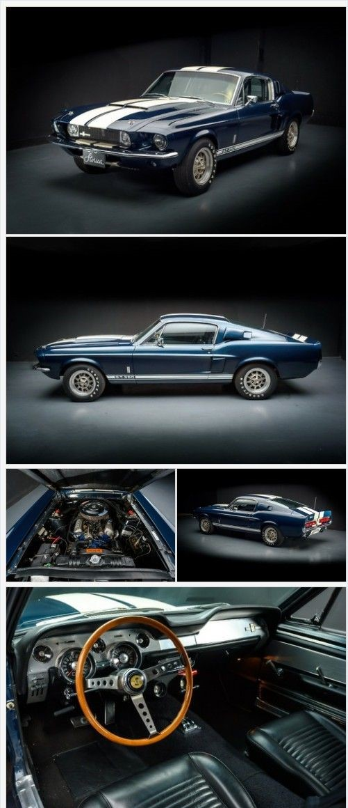
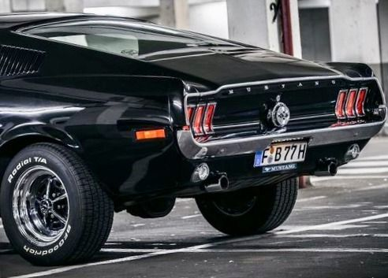
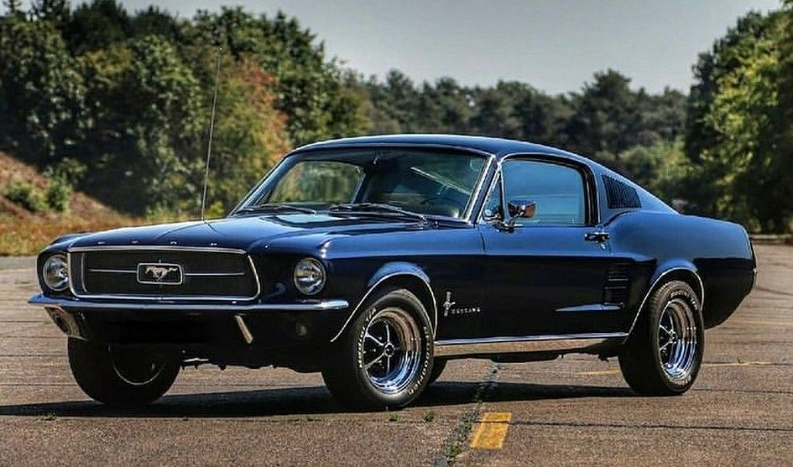
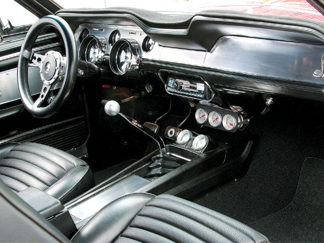
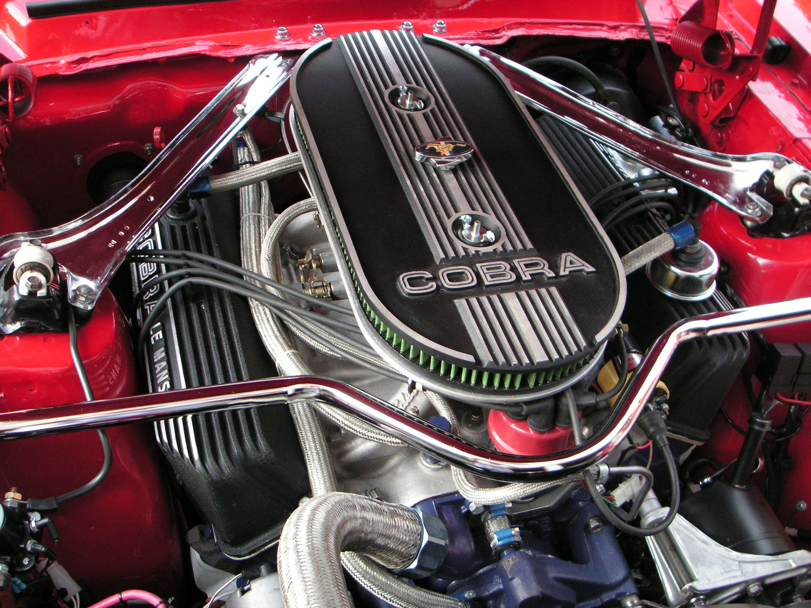
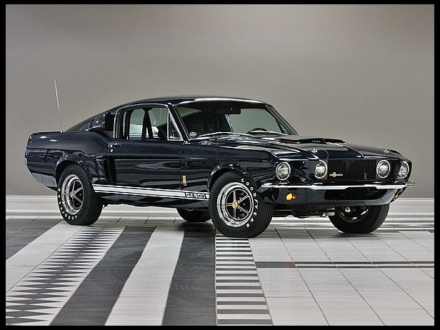
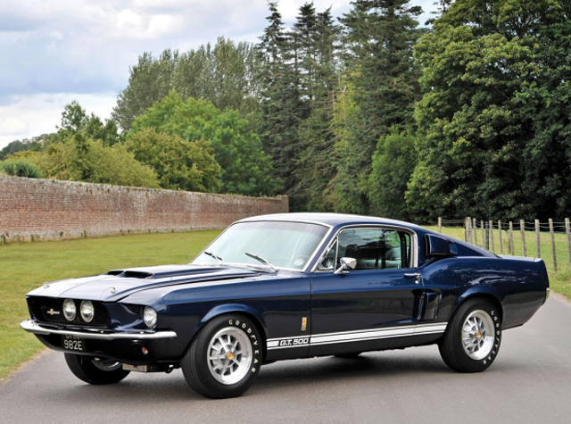

| OVERVIEW |
The Ford Mustang GT500 is a high-performance sports car that is part of the Mustang lineup.
It was first introduced in 1967 and has been produced in various iterations over the years.
The latest generation of the GT500 was introduced in 2020, and it is the most powerful Mustang
ever produced Inside, the GT500 has a comfortable and stylish cabin, with leather and suede upholstery, a 12-inch digital instrument cluster, and an optional B&O sound system. It also comes with advanced safety features, such as adaptive cruise control, lane departure warning, and automatic emergency braking. Overall, the Ford Mustang GT500 is a highly regarded sports car that offers impressive performance, advanced technology, and an iconic design. Its powerful engine, advanced features, and aggressive styling make it a top choice for car enthusiasts who want a high-performance sports car that is both practical and exciting to drive. |
|  | One of the most unique design features of the 1967 Mustang GT500 was its distinctive "Shelby" styling. The GT500 was designed by Carroll Shelby and his team at Shelby American, and they made several changes to the standard Mustang to give it a more aggressive and sporty look. Some of the most notable design features of the GT500 included:
All of these features helped the GT500 stand out from the standard Mustang and gave it a more aggressive and performance-oriented appearance. |
 |
| Number of cylinders | 7.0-liter |
| Power | 355 hp |
| Max. torque | 420 lb-ft @ 3,200 rpm |
| Max. output per litre | 50.7 hp/L |
| Top Speed | 202.7 km/h |
| Acceleration 0-60 mph | 6.2 s |
| Length | 183.6 in |
| width | 70.9 in |
| Height | 51.6 in |
| Wheelbase | 108 in |
| Max. load | 3780 pounds |
| Fuel consumption urban | 10-15 miles per gallon |
| In 2013,Shelby GT500 sold at a Barrett-Jackson auction | $192,500 |
| In 2018,Shelby GT500 sold at a Barrett-Jackson auction | $220,000 |
| In 2019,Shelby GT500 sold at a Mecum auction | $220,000 |
|  |  |
|  |  |
|  |  |